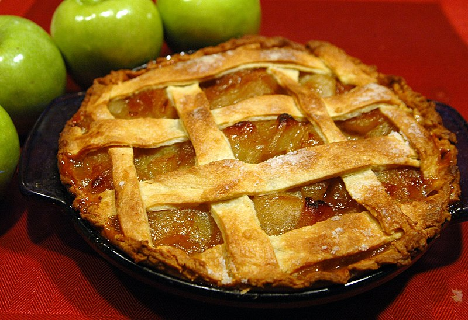

When it comes to homemade desserts, surely apple pie tops the list. It’s just so honest, nearly earnest in its desire to please. Where other homemade desserts like chocolate mousse, tiramisu and even trifles will turn up on a restaurant dessert menu, apple pie has no place there. It’s a homebody.
In this apple pie recipe, we use two types of flour to create the perfectly crisp, yet tender, pastry and the apples are cooked first in butter and sugar giving them a butterscotch-y edge. The most important part of this apple pie recipe? The ice-cream! It's an indispensable ingredient as the contrast of creamy cold ice-cream hitting the crispy warm pastry is part of your apple pie experience. This recipe is apple pie perfection!